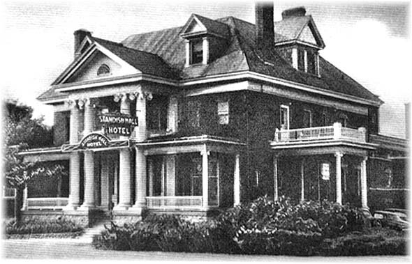

What do Louis Armstrong, Ella Fitzgerald, Duke Ellington and Benny Goodman have in common? Besides being some of the biggest names in Big Band and jazz, they all performed at the renowned Standish Hall Hotel at the corner of Rue Montcalm and Alexandre Tache Boulevard in Hull, Quebec.
Standish Hall began as the second residence of Ezra Butler Eddy, a successful lumber baron in the Ottawa area. After his first residence was destroyed by the Great Ottawa-Hull Fire of 1900, Eddy built a magnificent mansion on the same property between 1900-1901. He named the building Standish Hall after the captain of the Mayflower, Myles Standish1. Eddy lived in the residence until his death in 19062. His widow eventually sold the building to one of the managers of E. B. Eddy Company at the time, George Henry Millen3. Millen lived in the house until his death in 1928 after which his children sold the property to hoteliers Arthur Myre and Joseph Simard in 19294. They added to the existing building and opened it the Standish Hall Hotel in 19305.
During its heyday, the Standish Hall Hotel was one of the social epicenters of the Ottawa area. The hotel hosted regular dances, weddings and performances by local bands. It even attracted some of the most well-known performers of the day: Duke Ellington, Jimmy Dorsey, Ella Fitzgerald, Benny Goodman, Louis Armstrong and Sarah Vaughan all performed at the Standish Hall Hotel6. The hotel helped the City of Hull live up to its nickname “Little Chicago”7.
The hotel was not without its troubles. The police raided the place on numerous occasions for various violations. A riot broke out on December 1, 1941 between staff and 20 sailors and soldiers8.
The hotel also had several fires ignite during its history. One in 1938 caused $50,000 damage to the older part of the hotel9 and another occurred in the hotel basement in 195010. But the fire that destroyed the old part of the hotel occurred on August 5, 1951. A drummer for one of the bands died in the fire and several other were injured11.
Louis Armstrong had been performing that week and was staying at the hotel the morning of the fire. He gave an account of his ordeal: he had been staying in a 2nd floor room and heard someone screaming down the hall. Realizing there was a fire, he grabbed his dressing gown, escaped through a window at the end of a hall and walked along the roof until he could reach the fire escape12. The fire caused an estimated $200,000 in damages and destroyed the mansion of E. B. Eddy13.
After the fire, plans were made to rebuild, although with a more modern look14. After the hotel fully reopened, however, it never returned to its former glory. Although it continued to host local events and bands, it never attracted the celebrities as before. The owner, J. P. Maloney, also had grievances with the Federal Government. In 1952, the Government expropriated his property for a road realignment. However, when the plan was dropped in 1954, so was the expropriation. Maloney later filed suit against the Government for $548,330 as he had cancelled renovation plans due to the expropriation15. The case was brought before the Supreme Court of Canada and the judge awarded Maloney just over $39,00016. Due to appeals from both Maloney and the Crown, the award was lowered to $32,00117. The Hotel’s appeal and esteem dwindled with time and it was eventually purchased and demolished in 1975 by Campeau Corporation for $2.5 million dollars18. Today stands the Crowne Plaza Hotel in its place.
Sources:
1. “STANDISH HALL HOTEL Newest Hull Hostelry With Parking Space For Hundreds of Automobiles”, The Ottawa Citizen, 21 December 1929, p. 17 – accessed 27 Sep 2021 at https://www.newspapers.com/image/455869339
2. “E. B. Eddy Is Dead, A Busy Life Ended”, The Ottawa Citizen, 21 February 1906, p. 2 – accessed 19 Oct 2021 at https://www.newspapers.com/image/455688323
3. “Heard in the Social World”, The Ottawa Journal, 20 April 1908, p. 10 – accessed 19 Oct 2021 at https://www.newspapers.com/image/41954171
4. “Standish Hall Will in Future be Social Club”, The Ottawa Citizen, 14 March 1929, p. 2 – accessed 27 Sep 2021 at https://www.newspapers.com/image/455617588
5. “STANDISH HALL HOTEL Newest Hull Hostelry With Parking Space For Hundreds of Automobiles”, The Ottawa Citizen, 21 December 1929, p. 17 – accessed 27 Sep 2021 at https://www.newspapers.com/image/455869339
6. “Picture it when... The Standish Was A Hall of Fame”, The Ottawa Citizen, 16 April 2000, p. 34 – accessed 20 Oct 2021 at https://www.newspapers.com/image/466509779
7. “Bad Intentions”, The Ottawa Citizen, 17 April 1995, p. 9 – accessed 20 Oct 2021 at https://www.newspapers.com/image/464825584
8. “Army and Navy Stage Battle In Hull Hotel”, The Ottawa Journal, 2 December 1941, p. 2 – accessed 2 Oct 2021 at https://www.newspapers.com/image/47787304
9. “$50,000 Fire Loss At Standish Hall”, The Ottawa Citizen, 9 November 1938, p. 3 – accessed 2 Oct 2021 at https://www.newspapers.com/image/456491083
10. “Slight Fire Damage”, The Ottawa Citizen, 24 April 1950, p. 23 – accessed 2 Oct 2021 at https://www.newspapers.com/image/456574801
11. “1 Dead, 20 Hurt In Hull Hotel Fire”, The Ottawa Citizen, 6 August 1951, p. 1 – accessed 27 Sep 2021 at https://www.newspapers.com/image/456561701
12. “Fire”, The Ottawa Citizen, 6 August 1951, p. 10 – accessed 27 Sep 2021 at https://www.newspapers.com/image/456561741
13. “1 Dead, 20 Hurt In Hull Hotel Fire”, The Ottawa Citizen, 6 August 1951, p. 1 – accessed 27 Sep 2021 at https://www.newspapers.com/image/456561701
14. “New $250,000 Face For Standish Hall In Hull”, The Ottawa Citizen, 26 August 1954, p. 3 – accessed 1 Oct 2021 at https://www.newspapers.com/image/456970344
15. “Hull Hotel Launches $548,330 Suit For Government Expropriation Loss”, The Ottawa Citizen, 11 December 1958, p. 3 – accessed 10 Oct 2021 at https://www.newspapers.com/image/456933352
16. “Standish Hall Appeals Decision”, The Ottawa Citizen, 9 July 1960, p. 3 – accessed 1 Oct 2021 at https://www.newspapers.com/image/457021360
17. “Hull Hotel Gets Award of $32,001”, The Ottawa Citizen, 25 June 1962, p. 3 – accessed 21 Oct 2021 at https://www.newspapers.com/image/459066602
18. “Standish Hall”, The Ottawa Citizen, 22 March 1975, p. 23 – accessed 27 Sep 2021 at https://www.newspapers.com/image/460162477